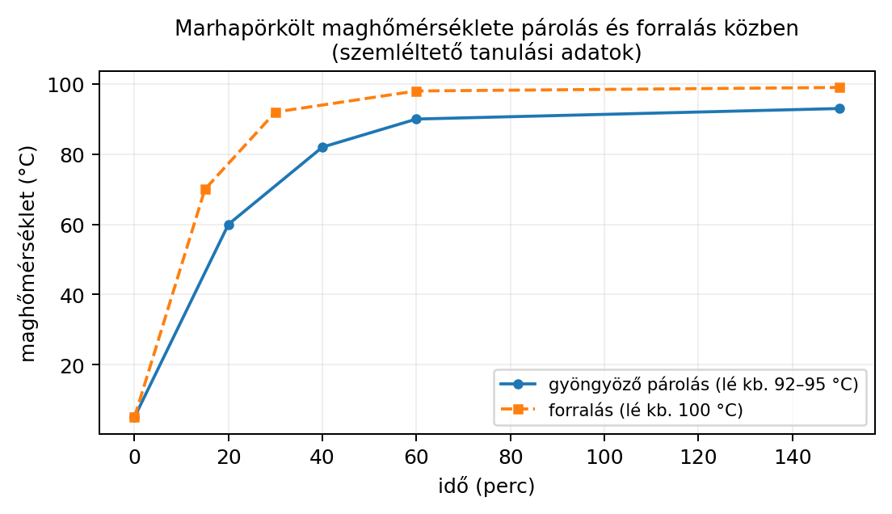

Egy átlagos hétköznap a konyhán nem a bélszín a legnehezebb vizsga. A párolt marha- és az apróhúsételek akkor sikerülnek jól, ha a szakács türelmes, ismeri a hús rostszerkezetét, és pontosan tartja a hőfokot. A marhapörkölt nem „csak egy szaftos hús”, hanem technológiai sor: előkészítés, hagymás zsiradékban fehéredésig pirított hús, fűszerkivonás, hosszú, csendes párolás. Ha a tanuló ezt a fejezetet megérti, már nemcsak receptet követ, hanem szabályozni tudja az étel állagát, ízét és biztonságát.
Konyhai jelenet. Délelőtt tíz óra. A séf kiosztja a napi munkát: „A marhapörkölt a tiéd. A hús lapocka. Négy óra múlva tálalunk.” A tanuló azonnal tudja: a lapocka kötőszövetes, kollagénben gazdag hús, ezért lassú, nedves hőkezelést kap. A kérdés az, hogyan éri el a szakács a „kés alatt omló, de nem szétfőtt” állagot, és hol bukik el a leggyakrabban: a rántás, a hőfok vagy a lé mennyiségénél. Ezt gyakoroljuk most.
Képzeld el a következő utat: üvegesre párolt hagyma → tűzről lehúzva fűszerpaprika → húskockák a saját levükben fehéredésig → felöntés → hosszú, alacsony hőfokú párolás → sűrű, fényes szaft. A húsban lévő kollagén sűrű, áttetsző rétege a hő és a nedvesség hatására zselatinná bomlik. Ezért lesz a párolt marha omlós, a pörkölt leve pedig a visszahűtés során sűrű, kocsonyás – ez természetes sűrítőanyag, nem hiba. Az idő és a hőfok együtt dolgozik: a magas láng nem gyorsítja a folyamatot, csak kiszárítja a hús felszínét, és a kollagén sem bomlik megfelelően.

A grafikon két görbéje ugyanarról a hűtőhideg húsról indul. A gyöngyözve párolt hús magja lassabban, 90–95 °C körül áll be; a forralt hús magja gyorsabban melegszik, de 100 °C fölé ez sem megy. A forralás hibája tehát nem a magasabb maghőmérséklet, hanem az, hogy a rostok erősebben összehúzódnak, kipréselik a nedvességet, és a hús kemény, száraz lesz.
Definíció. Párolt marhaételnek nevezzük azokat az ételeket, amelyeknél a rostban gazdag, kollagént és zsírt tartalmazó marhahúst kevés folyadékban, fedő alatt, hosszú időn keresztül, lehetőleg 80–95 °C közötti maghőmérsékleten hőkezeljük. A párolás célja a kötőszövet felpuhulása, a hús rostjainak lazulása és a szaft kialakulása.
Szabály. A pároláshoz olyan húsrészt válassz, amelyik elegendő belső nedvességet és kötőszövetet tartalmaz. Jól párolható: marhalábszár, lapocka, nyak, fartő, tarja, szegy. A bélszín vagy a hátszín sütve jobb; párolva száraz, rostos lesz, mert kevés a kollagénje, és hamar hőkezelést kap.
Szabály. A párolás hőfoka soha ne forraljon. A forrás mellett a hús rostjai gyorsan összehúzódnak, kiszorítják a vizet, és a hús kemény lesz. A gyöngyöző, éppen hogy mozgó folyadék az ideális. Ha nincs maghőmérő, a lé apró gyöngyözése és a hús villával való lazán szétválaszthatósága a jel.
Allergén. Az alfejezet ételei a felhasznált sűrítéstől, köretektől és tálalástól függően glutént, tojást, tejet és mustárt tartalmazhatnak; minden technológiai lapon külön soroljuk fel őket. Minden technológiai lapnál ellenőrizd a felhasznált alapanyagok gyártói jelölését és a konyhai keresztszennyeződés lehetőségét. A vendég tájékoztatása az 1169/2011/EU rendelet szerint kötelező. Tilos azt mondani: „biztos, hogy allergénmentes”. Helyette: „a technológiai lap szerint glutént nem tartalmaz; a konyha keresztszennyeződést nem tud kizárni.”
Jogszabály. A pörkölt, gulyás, tokány nem tartozik az uniós oltalom alatt álló, termékspecifikus előírással védett élelmiszerek közé, de az ételmegnevezésnek jogszerűnek és a megtévesztés tilalmával összhangban lévőnek kell lennie (178/2002/EK, 1169/2011/EU). A Magyar Élelmiszerkönyv és a vendéglátó-ipari iránymutatások a „pörkölt” megnevezést a magyaros technológiájú, fűszerpaprikás, hagymás, zsírban pirított, fedő alatt párolt húsételhez kötik (ellenőrizendő: aktuális útmutató és üzemi standard).
A marhahúsból készülő párolt és apróhúsos ételeket az alábbi táblázat rendszerezi. A felosztás a hús előkészítése, a hőkezelés módja és a sűrítés foka szerint történik.
| Csoport | Jellemző eljárás | Jellemző ételpélda | Sűrítés | Fűszerjelleg |
|---|---|---|---|---|
| Egészben vagy szeletben párolt marha | Barnára pirított hús, hosszú párolás, zöldség és boros vagy tejszínes lé | Vadas marha, zöldséges marharagu | lisztszórás, passzírozott zöldség, tejszín | gyökérzöldség, bor, babér, mustár |
| Apróhúsból készült magyaros egytál | Zsírban pirított hagyma, pirospaprika, húskocka, párolás | Marhapörkölt, bográcsgulyás, gulyásleves | önsűrűsödés, burgonya keményítője (a gulyás klasszikusan rántás nélkül) | fűszerpaprika, kömény, fokhagyma |
| Tokány jellegű ételek | Hosszúra vágott húst csíkokban pirítunk, hagyma, paprika nélkül vagy kevés paprikával, később tejszín, tejföl | Marhatokány, erdélyi tokány | lisztszórás, tejföl | bors, rozmaring, szalonna, mustár |
| Ragu jellegű ételek | Kockázott húsból, világos vagy barna alaplével, zöldséggel, lisztszórással | Marharagu gombás, zöldséges marharagu | lisztszórás, burgonyapüré betét | bors, kakukkfű, gomba, zöldség |
| Vagdalt marhaételek | Darált húsból formázott, száraz hőkezeléssel sült pogácsa, fasírt | Fasírt, marha hamburgerpogácsa, vagdalt marhaszelet | nincs (állagpuhító kenyér, tojás) | só, bors, fokhagyma, pirospaprika |
Az alábbi technológiai lap a hazai konyhai gyakorlat egy lehetséges alapreceptje. A mennyiségek 10 adagra szólnak; az adagsúly a szafttal együtt értendő.
Adagszám: 10 adag Adagsúly: 250 g kész pörkölt (hús és szaft együtt) + 150 g köret (tészta, nokedli vagy burgonya) Allergének: a pörkölt maga nem tartalmaz jelölésköteles allergént (ha alaplével készül, az alaplé összetétele szerint zeller is lehet: ellenőrizendő: alaplé receptúrája); a csipetke/nokedli köret glutént és tojást, a tejfölös tálalás tejet tartalmaz; rántásos sűrítésnél glutén.
| Nyersanyag | Mennyiség 10 adagra | Megjegyzés |
|---|---|---|
| Marhalapocka | 1 800 g | kockázva, 25–30 g/db; bruttó |
| Sertészsír vagy baromfizsír | 120 g | hőálló zsiradék |
| Vöröshagyma | 400 g | tisztítva, apró kocka |
| Fűszerpaprika | 30 g | édes, jó minőségű |
| Só | 25 g | a hús tömegéhez arányítva |
| Fokhagyma | 12 g | zúzva, kb. 2 gerezd |
| Kömény | 2 g | őrölt |
| Paradicsompüré | 50 g | sűrű, só nélkül |
| Víz vagy alaplé | 800 ml | csak annyi, hogy ellepje |
| Csipetke vagy nokedli | 1 500 g | köret, kész (150 g/adag) |
Eszközök: vastag aljú lábas, fedő, habverő vagy fakanál, mérleg, maghőmérő, szűrőkanál.
Előkészítés 1. A húst nem mosod: ha szükséges, papírtörlővel szárazra itatod. Ha szennyeződést látsz, a szennyezett részt késsel vágd le, a felületet papírtörlővel itasd le; a nyers húst nem öblítjük. A hús felületén lévő víz gőzöl, és a pirítás helyett főni fog. 2. A húst egyenletes, 25–30 g-os kockákra vágod. A túl kicsi kocka szétfő; a túl nagy kocka kívül szárad, belül nyers marad. 3. A hagymát tisztítod, apró kockára vágod. 4. A fűszerpaprikát, sót, köményt, fokhagymát kiméred. A paprikát ne tedd forró zsiradékra sokáig, mert megkeseredik.
Elkészítés 1. A lábasban felolvasztod a zsírt közepes hőfokon. A hagymát üvegesre pirítod, de ne barnuljon meg. 2. Leveszed a lábast a tűzről, belekevered a fűszerpaprikát, azonnal hozzáadod a húst és 1–2 dl vizet (vagy alaplevet), hogy a paprika ne égjen meg; visszateszed a tűzre, és a húst kevergetve, a saját levében fehéredésig pirítod. 3. Sóval, köménnyel, fokhagymával, paradicsompürével ízesíted. A paradicsompüré savassága ellensúlyozza a zsír nehézségét. 4. Felöntöd annyi vízzel vagy alaplével, hogy a húst éppen ellepje. Felforralod, majd a lángot a lehető legkisebbre veszed. 5. Fedő alatt, gyöngyözve párolod 2–2,5 órán át. A maghőmérséklet 90–95 °C legyen a vastagabb húskockában. A kivett húskocka késhegyre szúrva omlós, de a kocka formáját megtartja. 6. Ha a lé túl híg, a hús kivétele után a szaftot erősebb lángon, kevergetés nélkül, nyíltan sűríted. Ha a lé túl sűrű, forró vízzel igazítod.
A pörköltalap (1–2. lépés) a magyaros párolt ételek kulcsmozzanata: a paprika színe és íze a tűzről lehúzott edényben „nyílik meg”, forró zsírban viszont pillanatok alatt megég.
A képsor 1–4. képe az elkészítés 1–2. lépését bontja részekre, az 5. kép a 4–5. lépést mutatja. Az utolsó kép a minőségi ellenőrzés: helyes az élénkpiros, fényes szaft; a barnás-fekete, keserű paprika (forró zsírba szórva) nem menthető, új alapot kell készíteni. A HTML-kiadásban a lépéseket egyenként lapozhatod.
Kritikus pontok - CCP: Maghőmérséklet. A marhahúsból készült pörkölt biztonságossága a hús átsütésénél: a javasolt maghőmérséklet legalább 75 °C a húskocka közepén; a hosszú párolás miatt a gyakorlati érték 90–95 °C. (ellenőrizendő: üzemi HACCP-terv határértéke) - CCP: Párolás utáni készentartás. A kész pörköltet legalább 63 °C-on kell tartani, vagy 5 °C alá gyorsan lehűteni. A 63 °C alatti melegentartásban a spóraformáló és romlást okozó mikrobák szaporodhatnak. (ellenőrizendő: NÉBIH útmutató, HACCP-terv) - Keresztszennyeződés. A nyers hús kockája, a húslé, a vágódeszka és a kéz nem érintkezhet kész étellel, körettel, tálalóeszközzel. Nyers húsos deszkát mosás nélkül ne használj a zöldséghez.
Készentartás és tálalás A pörköltet fedő alatt, legalább 63 °C-on tartod készen (ellenőrizendő: NÉBIH-útmutató / HACCP-terv). Tálaláskor a kockára szedett húst a szafttal meglocsolod. Hagyományos köret: sós vízben főtt csipetke, nokedli, petrezselymes burgonya. Tetejére kevés friss petrezselymet vagy zöldpaprikaszeletet tehetsz. A tejfölös tálalásnál a tejfölt külön vagy a tányér szélére, ne a forró lébe keverd, mert kicsapódik.
Minőségi követelmények - A hús kocka formájú, késre omló, nem szálas. - A szaft sűrű, fényes, vörösesbarna, zsírpöttyös. - Illata fűszerpaprikás, hagymás, húsos. - Íze harmonikus: só, paprika, hagyma, fokhagyma; a paprika nem keserű.
Tipikus hibák és javításuk - Kemény hús: rövid párolás vagy forrásban főzés. Javítás: tovább párolni, fedő alatt, alacsony hőfokon. - Fakó, keserű paprika: a paprikát forró zsírban égették. Javítás: új adagot készíteni; a megégett paprika keserű, nem menthető. - Szétfőtt, rostokra esett hús: túl magas hőfok vagy túl hosszú idő. Javítás: a szaftot le kell szűrni, a húst nem keverni, a levet külön sűríteni.
Definíció. A tokány olyan magyaros apróhúsétel, amelynél a húst csíkokra vagy hosszú szeletekre vágjuk, zsírban vagy szalonnában megpirítjuk, hagymával pároljuk, és a levét lisztszórással, tejföllel vagy tejszínnel sűrítjük. A pörkölthöz képest kevesebb vagy nulla fűszerpaprikát használ; a jellegét bors, mustár, rozmaring, szalonna és savanykás komponens (csemegeuborka, borecet, citromlé) adja.
A „csikós tokány” klasszikusan sertéshúsból készül, az „erdélyi tokány” pedig más fűszerezésű (szalonna, hagyma, bors, majoranna, paprika nélkül); az alábbi lap ezért a marhából készülő, mustáros-tejfölös, általános tokányt mutatja be (ellenőrizendő: Magyar Vendéglátóipari Anyagnorma / klasszikus szakácskönyv).
Az apróhúsételek közti első különbség már a vágódeszkán látszik: a rendszerező táblázat ételtípusa a hús vágásformájához kötődik.
A pörköltkocka 25–30 g-os (a rajzon kb. 3 cm-es élű, a tömegből számolva, tájékoztató), a tokány kb. 1 cm vastag, 4–5 cm hosszú csíkja a rostokra merőlegesen vágott (lásd a tokány technológiai lapját). A gulyás- és a ragukocka méretét az üzemi technológiai lap adja meg (ellenőrizendő). A HTML-kiadásban a darabokra mutatva megjelenik a leírásuk.
Adagszám: 10 adag Adagsúly: 250 g tokány + 150 g köret (sós vízben főtt tarhonya vagy párolt rizs) Allergének: mustár; tejföl, tejszín (tej); búzaliszt (glutén). A füstölt szalonna fűszerkeveréke zellert, szóját vagy szezámmagot is tartalmazhat; ellenőrizd a gyártói jelölést.
| Nyersanyag | Mennyiség 10 adagra | Megjegyzés |
|---|---|---|
| Marhalábszár vagy lapocka | 1 600 g | hosszú csíkokra vágva (kb. 1 cm vastag, 4–5 cm hosszú) |
| Füstölt szalonna | 150 g | apró kocka |
| Vöröshagyma | 300 g | tisztítva, félfőre vágva |
| Liszt | 60 g | BL55 finomliszt |
| Tejföl vagy tejszín | 300 g | 20%-os tejföl |
| Mustár | 20 g | erős vagy csemege |
| Csemegeuborka | 150 g | savanyú, felszeletelve |
| Só | 20 g | |
| Fekete bors | 4 g | frissen őrölt |
| Babérlevél | 2 db | egész |
| Víz vagy alaplé | 600 ml |
Előkészítés 1. A húst a rostokra merőleges irányban vágd hosszú csíkokra (kb. 1 cm vastag, 4–5 cm hosszú). 2. A szalonnát apró kockára vágod, a hagymát félfőre. 3. A lisztet, tejfölt, mustárt, uborkát kiméred.
Elkészítés 1. A szalonnát saját zsírjában kisütöd, a pörcöt kiveszed, félreteszed. 2. A szalonnazsírban a húst erős tűzön, tételenként megpirítod. Ne zsúfold túl a lábast, mert a hús levet ereszt, és főni fog, nem pirulni. 3. A hagymát hozzáadod, üvegesre pirítod. Meghinted liszttel, kevergetve 1–2 percig pirítod, amíg a liszt el nem veszti nyers ízét. 4. Felöntöd vízzel vagy alaplével, hozzáadod a babért, sót, borsot. Fedő alatt, alacsony hőfokon 1,5–2 órán át párolod. 5. Amikor a hús omlós, hozzáadod a tejfölt, mustárt, az uborkát és a pörcöt. Már nem forralod, csak kevergetve átmelegíted, amíg a mártás besűrűsödik.
Kritikus pontok - CCP: Hőkezelés. A csíkokra vágott húst teljes hőkezeléssel biztonságossá kell tenni. A maghőmérséklet legalább 75 °C a legvastagabb csík közepén. (ellenőrizendő: üzemi HACCP) - Keresztszennyeződés. A nyers hús csíkjait, a szalonnás vágódeszkát és a húslét tartsd elkülönítve a kész ételtől, a tejföltől, a tálalóeszközöktől. A tejfölös utósűrítésnél a hőkezelés már nem validálható, ezért a nyers húsos felületeket ne érintsd.
Készentartás és tálalás A tokányt legalább 63 °C-on tartod készen (ellenőrizendő: NÉBIH-útmutató / HACCP-terv). Tálaláskor a húst a mártással meglocsolod, tarhonyával vagy rizzsel kínálod. Tetejére apróra vágott petrezselyem vagy friss tárkony illik.
Minőségi követelmények - A hús csíkokban van, omlós, nem szálas. - A mártás sűrű, selymes, nem lisztízű. - Színe világosbarna, tejfölös. - Íze borsos, mustáros, enyhén savanykás, harmonikus.
Definíció. A marhagulyás olyan sűrű, egytálétel jellegű leves, amely a pörköltalapra (hagyma, zsír, fűszerpaprika, hús) épül, felöntve, kockázott burgonyával és zöldséggel együtt főzött. A klasszikus gulyás rántást nem kap; tájjellegű változatokban előfordulhat (ellenőrizendő: Magyar Élelmiszerkönyv / üzemi receptúra). A ragu ezzel szemben franciás típusú, világos vagy barna alaplével, zöldséggel, lisztszórással készül, a húst és a zöldséget együtt párolja.
Különbségtétel (gyakori vizsgakérdés): - Pörkölt: a húst kockára vágva, zsírban pirított hagymás-paprikás alapon, kevés lében, fedő alatt pároljuk; a szaftot a hús kollagénje és a hagyma sűríti; jellemzően nem tartalmaz burgonyát. - Gulyás: levesként tálalt, burgonyás, zöldséges pörköltalapú étel; több folyadékkal készül, mint a pörkölt. A burgonya a hőkezelés végén kerül bele, különben szétfő. - Tokány: hosszúra vágott hús, paprika nélkül vagy kevés paprikával, liszt- és tejfölös sűrítéssel, savanykás. - Ragu: kockázott húsból, zöldséggel, lisztszórással, alaplével, nem magyaros.
A pörkölt–paprikás–tokány–becsinált besorolást döntési ábrán a Párolással és főzéssel készülő szárnyasételek alfejezet foglalja össze; ugyanez a kérdéssor a marhahúsos ételekre is érvényes.
Példa. Adott marhapörkölt-adagból gulyást kell készíteni. A pörköltet felöntöd kb. 1,6-szoros tömegre, hozzáadod a burgonyát és a zöldséget, majd a burgonya keményítőjével és főzőlevével sűríted (rántás nélkül). A végeredmény sűrű, merőkanállal adagolható, mégis leveses.
Számítás.
Feladat (C szint). 10 adag marhapörköltet kell gulyássá alakítani. A pörkölt tömege a kész fázisban 2 500 g. A gulyás adagsúlya 400 g. Mennyi burgonyát és folyadékot kell hozzáadni, ha a hozzáadott tömeg 60%-a nettó burgonya, 40%-a folyadék, a folyadékot elpárolgás miatt 12%-kal növelve kell kimérni, és a burgonya hámozási hulladéka 20%? A példa tanulási adat.
Adott: kész pörkölt tömege ; kész gulyás szükséges tömege . Keresett: a hozzáadandó burgonya bruttó tömege és a kimérendő folyadék térfogata .
Megoldás: 1. A kész gulyás tömege: . 2. A hozzáadandó anyagok tömege: . 3. A burgonya legyen a hozzáadott tömeg 60%-a: . 4. A folyadék tömege: . Mivel sűrűsége kb. , . 5. Növelt folyadék az elpárolgás miatt: . 6. Bruttó burgonya a 20% hulladékkal: .
Ellenőrzés: A pörkölt tömege 2 500 g, a burgonya nettó 900 g, a folyadék 672 g; összesen . A kész gulyás 4000 g, a különbség a párolgás, amelyet a folyadéknövelés kompenzál.
Definíció. A vagdalt hús olyan, darálással aprított húsból készülő termék, amelyet formázás után száraz hőkezeléssel sütnek. A konyhai gyakorlatban a marhafasírt, marha burgerpogácsa, vagdalt marhaszelet a legjellemzőbb. A vagdalt ételek nem pároltak, hanem sütöttek, de a fejezetben azért tárgyaljuk őket, mert a marha feldolgozásának egyik legfontosabb apróhús-típusa.
Szabály. A vagdalt hús belsejének teljesen át kell sülnie. A marhából készült vagdalt pogácsák javasolt biztonsági maghőmérséklete legalább 75 °C; a felületi sütéshez gyakran 75–78 °C a gyakorlati cél. (ellenőrizendő: üzemi HACCP-terv; a rózsaszín marha steak és a darált marha hőkezelési szintje eltér: a darált húsnál a kockázat nagyobb, mert a felületi baktériumok a darálás során a massza belsejébe kerülnek.)
Higiénia. A darált hús a legkockázatosabb nyers húsformák egyike. A darálás során a felületi csíraszám a teljes masszába keveredik, ezért a darált húst a darálás után azonnal hűtve kell tartani, és a hőkezelést nem szabad halogatni. A nyers vagdalt masszából sem enni, sem kóstolni nem szabad. A gyártói előírás szerint darált húst hűtve, legfeljebb a HACCP-tervben rögzített ideig tárolj. (ellenőrizendő: tárolási idő)
Adagszám: 10 adag (25 db 80 g-os pogácsa, kb. 2,5 db/adag) Adagsúly: kb. 200 g nyers pogácsa (80 g/db), sütve kb. 70 g/db Allergének: tojás, glutén (zsemlemorzsa, kenyér), tej (tejjel áztatott kenyér). Gluténmentes kérésnél a masszában lévő kenyeret/zsemlét és a panírmorzsát is gluténmentes termékre cseréled, külön edényben, tiszta eszközökkel készíted; a vendéget tájékoztatod, hogy a konyha a keresztszennyeződést nem tudja kizárni. A tojástól és a tejtől függően jelezd.
| Nyersanyag | Mennyiség 10 adagra | Megjegyzés |
|---|---|---|
| Darált marhahús | 1 500 g | 15–20% zsírtartalom |
| Száraz kenyér vagy zsemle | 200 g | héj nélkül, tejbe áztatva |
| Tej | 200 ml | a kenyér áztatásához |
| Tojás | 2 db | L-es, össz. kb. 120 g |
| Vöröshagyma | 150 g | reszelve vagy nagyon apróra vágva |
| Fokhagyma | 6 g | zúzva |
| Só | 25 g | |
| Fekete bors | 3 g | |
| Édes fűszerpaprika | 3 g | |
| Zsemlemorzsa | 100 g | panírozáshoz |
| Olaj a sütéshez | 200 ml | összesen, sütéshez |
Előkészítés 1. A kenyeret héj nélkül kiméred, tejbe áztatod, majd alaposan kinyomkodod. 2. A darált húst, a kenyeret, a tojást, a hagymát, fokhagymát és a fűszereket egy tálba teszed. A masszát hideg kézzel, rövid ideig dolgozod össze. A túldolgozás tömör, gumiszerű állagot ad. 3. A masszát 30 percig hűtőben pihenteted. 4. A masszából 80 g-os adagokat formázol, ellapítod, zsemlemorzsába forgatod.
Elkészítés 1. Serpenyőben az olajat közepes hőre melegíted. A pogácsákat egymástól távol, egy rétegben helyezed a serpenyőbe. 2. Oldalanként 4–5 percig sütöd, amíg a felület mélybarnára pirul. A hőkezelést addig folytatod, amíg a maghőmérséklet a pogácsa közepén eléri a 75 °C-ot. 3. A kész pogácsákat hűtőrácsra vagy papírtörlőre szeded, rövid pihentetés után tálalod.
Kritikus pontok - CCP: Maghőmérséklet. A darált húsból készült pogácsát 75 °C alatt nem szabad készként kezelni. A rózsaszín maghőmérsékletű darált marha vagdalt pogácsa fokozott kockázatot jelent, különösen várandós, kisgyermek, idős és legyengült immunrendszerű vendégek esetén. - CCP: Darálás utáni hűtés. A darált húst 5 °C alatt, zárt edényben tartsd, a masszát a formázás előtt hűtve kell tartani. (ellenőrizendő: hűtési határérték, HACCP) - Keresztszennyeződés. A nyers darált húsos kézzel, eszközzel, deszkával ne érj hozzá a kész pogácsához, a zsemlemorzsás panírhoz, a tálalóeszközökhöz. A nyers masszás edényt azonnal mosd el.
Készentartás és tálalás A pogácsákat legalább 63 °C-on tartod készen (ellenőrizendő: HACCP-terv), vagy sütés után azonnal tálalod. Hagyományos köret: petrezselymes burgonya, rizs, saláta. Alkalmi tálalás: hamburger zsemlében, salátával, paradicsommal, szósszal – ebben az esetben a zsemle glutén, a szósz tojás, mustár, szója, tej allergént tartalmazhat.
Minőségi követelmények - A pogácsa formája kerek, enyhén domború. - A felület egyenletesen barna, nem égett. - A vágási felület egységesen barna, nem nyers. - A textúra szaftos, de szilárd; nem száraz, nem széteső.
Cél: A tanuló önállóan elkészít 10 adag marhapörköltöt a technológiai lap alapján, és a CCP-ket dokumentálja. Eszközök és anyagok: a fenti technológiai lap anyagai; mérleg, maghőmérő, vágódeszka, kések, vastag aljú lábas, fedő, keverőkanál, higiéniai eszközök. Biztonsági korlát. A munkát tankonyhán vagy oktatói felügyelettel végezd. Otthon a bő zsiradékos sütést, a nagy tömegű folyadék mozgatását és a hosszú párolást csak a leírt biztonsági feltételekkel gyakorold.
Higiéniai előkészület. 1. Kézmosás, tiszta köpeny, hajháló, visszafogott ékszerviselés. 2. Nyers húsos munkaterület és eszközök elkülönítése. 3. Hűtőtér hőmérsékletének ellenőrzése (cél: 5 °C alatt). (ellenőrizendő) 4. Kiméred az alapanyagokat, a húst a hűtőből közvetlenül felhasználás előtt veszed ki.
Lépések: 1. Húst kockázol, hagymát aprítasz. 2. A zsírt felolvasztod, a hagymát üvegesre pirítod. 3. Tűzről lehúzva paprikázol, hozzáadod a húst és 1–2 dl vizet (vagy alaplevet), majd a húst a saját levében fehéredésig pirítod. 4. Ízesítesz, felöntöd, felforralod, majd alacsony hőfokra veszed. 5. Fedő alatt párolod, 45 percenként ellenőrzöd a folyadékszintet. 6. A maghőmérsékletet a húskocka közepén méred; feljegyzed. 7. A kész ételt legalább 63 °C-on tartod, vagy gyorsan 5 °C alá lehűtöd (ellenőrizendő: HACCP-terv).
Ellenőrzési pontok: - A húskocka késhegyre omlik, de nem esik szét. - A lé színe vörösesbarna, nem égett paprikaízű. - A maghőmérséklet legalább 90 °C a párolás végén; a CCP dokumentálva. - A hűtési idő és hőmérséklet a HACCP-terv szerint dokumentálva.
Dokumentálás: a munkalapon rögzíted a hús tömegét, a párolási időt, a maghőmérsékletet, a készentartási hőmérsékletet, az érzékszervi ellenőrzést.
| Tulajdonság | Marhapörkölt | Marhatokány | Vagdalt marhapogácsa |
|---|---|---|---|
| Szín | vörösesbarna, fényes szaft | világosbarna, tejfölös | mélybarna felület, barna belső |
| Állag | kocka, késre omló, nem szálas | csík, omlós, selymes mártás | darált, szaftos, nem gumiszerű |
| Íz | pörköltes, hagymás, paprikás | borsos, mustáros, savanykás | húsos, hagymás, fűszeres |
| Illat | fűszerpaprikás, húsos | borsos, tejfölös, füstölt | húsos, pirult |
| CCP | legalább 75 °C; párolásnál 90–95 °C | legalább 75 °C | legalább 75 °C |
Ellenőrzés a gyakorlatban: A pörköltet nem lehet csak nézni; meg kell kóstolni, a húst meg kell szúrni, a maghőmérsékletet mérni. A szaft állaga hidegen sűrűbb, ezért a kóstolásnál melegen kell ellenőrizni.
Kemény, rágós marhapörkölt. Ok: a húst forrásban főzték, vagy túl rövid ideig párolták. Helyes: alacsony hőfok, fedő alatt, 2–2,5 óra; a gyöngyözést nem szabad gyorsítani.
Fakó, keserű pörkölt. Ok: a fűszerpaprikát forró zsírban égették, vagy a hagyma megbarnult. Helyes: a paprikát tűzről lehúzva, a hagymát csak üvegesre pirítva hozzáadni.
Szétfőtt, rostjaira esett hús. Ok: túl magas hőfokon, túl hosszan főzték, vagy a húst a párolás alatt kevergették. Helyes: a húst nem keverni, a hőfokot tartani, a kész húst a léből kivéve a szaftot külön sűríteni.
Csomós, lisztízű, kicsapódott tokány. Ok: a tejfölös-lisztes sűrítést forralták, vagy a lisztet nyersen adták hozzá. Helyes: a lisztet a zsírban pirítani, a tejfölt csak a végén hozzáadni, forralás nélkül átmelegíteni.
Nyers belű vagdalt pogácsa. Ok: túl vastag pogácsa, túl forró serpenyő, elmaradt maghőmérséklet-mérés. Helyes: egyenletes vastagság, közepes hőfok, maghőmérővel ellenőrzés.
Hétvégi rendezvény: pörkölt és tokány egyszerre. Egy családi rendezvényre 120 adag marhapörköltet és 80 adag marhatokányt kért a vendég. A tanuló szakács a pörkölt húsát kockára vágta, a tokány húsát csíkokra. A pörköltet a fent leírt módon készítette, a tokányt is. A baj akkor kezdődött, amikor a tokány tejfölös sűrítését a nagy melegben a tűzön tartotta, és a tejföl kicsapódott. A pörkölt viszont hibátlan lett, mert a hőfok nem forrt, és a húst nem keverte.
Tanulság: A tokány tejfölös mártása nem forralható. A hibát azzal javította, hogy a kicsapódott mártást leszűrte, új tejfölt kevert el kevés liszttel, és a húst a szafttal csak átmelegítette. A vendég nem vette észre, de a tanuló megtanulta: a tejfölös sűrítés a befejező művelet, nem főzhető.
Önellenőrzés – válaszok 1. A pörkölt kockára vágott hús, paprikás, hagymás alapon, kevés lében párolva; a tokány hosszúra vágott hús, paprika nélkül vagy kevés paprikával, lisztes-tejfölös sűrítéssel, savanykás. 2. A forrás kiszárítja a rostokat, a hús kemény lesz; a kollagén zselatinosodása alacsony hőfokon, hosszú idővel megy végbe. 3. A 75 °C-os maghőmérséklet a pogácsa közepén; a darált húsban a baktériumok a teljes masszában eloszlanak. 4. A lábszár; a bélszín sovány, kevés kötőszövettel, párolva száraz lesz. 5. A keserű paprika megégett, nem javítható; új adagot kell készíteni, a paprikát tűzről lehúzva kell hozzáadni.
1. feladat (A). Csoportosítsd az alábbi ételeket párolt vagy vagdalt csoportba: vadas marha, fasírt, marhapörkölt, hamburgerpogácsa, bográcsgulyás, marhatokány.
2. feladat (A). Számítsd ki, mennyi marhalapockát kell vételezni 30 adag marhapörkölthöz, ha 10 adaghoz 1 800 g kell.
3. feladat (B). A vagdalt pogácsa technológiájában a masszát formázás előtt 30 percig hűtőben pihenteted. Mi a célja? Helyes vagy hibás: a masszát formázás előtt fél órára meleg helyre teszed.
4. feladat (B). Állítsd sorba a marhapörkölt lépéseit: felöntés, húskocka pirítás, hagyma üvegesre pirítása, fűszerpaprika hozzáadása, sózás, készpörkölt szaftsűrítése, hosszú párolás.
5. feladat (C). Egy vendég gluténérzékenységet jelez. A marhatokányt akarja. A technológiai lap lisztet tartalmaz. Hogyan alakítod át biztonságosabban a lisztet?
6. feladat (D). Készíts hibaelemző táblázatot a következő ételre: száraz, kemény, szálakra esett marhapörkölt. Add meg a lehetséges okot, a javítást és a megelőzést.
1. feladat megoldása. - Párolt: vadas marha, marhapörkölt, bográcsgulyás, marhatokány. - Vagdalt: fasírt, hamburgerpogácsa.
2. feladat megoldása. Adott: , adag. . Válasz: marhalapocka.
3. feladat megoldása. A pihentetés célja a massza egyenletes állagának kialakítása, a fűszerek eloszlása, a formázás megkönnyítése. A pihentetés hűtőben történik, nem meleg helyen; meleg helyen a mikrobaszaporodás kockázata nő, a massza puha, alaktalan lesz.
4. feladat megoldása. Helyes sorrend: 1. hagyma üvegesre pirítása; 2. fűszerpaprika hozzáadása (tűzről lehúzva); 3. húskocka pirítás (a paprikával együtt, kevés folyadékkal); 4. sózás; 5. felöntés; 6. hosszú párolás; 7. készpörkölt szaftsűrítése.
5. feladat megoldása. A lisztet kihagyod, és a mártást a húsból kioldott zselatinnal, a sűrítést gluténmentes sűrítővel (pl. kukoricakeményítő, burgonyapüré) oldod; a mustár és a füstölt szalonna összetevőit glutén szempontjából ellenőrzöd; külön edényben, tiszta eszközökkel főzöd. A vendéget tájékoztatod: a konyha keresztszennyeződést nem tud kizárni; a menü tételét a technológiai lap szerint módosítod. Üzemben a dietetikussal egyeztetni kell.
6. feladat megoldása. - Tünet: száraz, kemény, szálakra esett pörkölt. - Okok: forrásban főzés, túl rövid párolás, alacsony kollagéntartalmú húsrész (bélszín), túl hosszú hőkezelés. - Ellenőrzés: maghőmérséklet a hús közepén; késhegyre szúrás; kóstolás. - Javítás: ha kevésbé szétfőtt, tovább párolod alacsony hőfokon; ha szétfőtt, a húst leszűröd, a szaftot sűríted, a húst már nem kevered. - Megelőzés: megfelelő húsrész (lapocka, lábszár), alacsony hőfok, fedő alatt, nem keverni, csak a folyadékot pótolni.
A párolt marhaételek akkor sikerülnek, ha a szakács a hús hőkezelését alacsony hőfokon, fedő alatt, hosszú időn át vezeti. A pörkölt kockahúsból, zsírban pirított hagymás-paprikás alapon, kevés lében készül; a tokány hosszúra vágott húsból, paprika nélkül vagy kevés paprikával, liszt- és tejfölös sűrítéssel; a gulyás pörköltalapból, felöntéssel, burgonyával és zöldséggel. A vagdalt marhapogácsa esetén a darált hús miatt a maghőmérséklet mérését és a 75 °C-os maghőmérséklet elérését kell CCP-ként kezelni. A hús előkészítése során a nyers és kész felületeket szigorúan el kell különíteni. A legfontosabb továbbvitt eredmény: a pörköltalap (hagymás zsír, fűszerpaprika, pirított hús) és a párolás hőfoka a borjú- és sertésételek magyaros párolt változatainál is visszatér (Borjúhús ételei). A tejfölös-lisztes utósűrítést soha nem forraljuk.